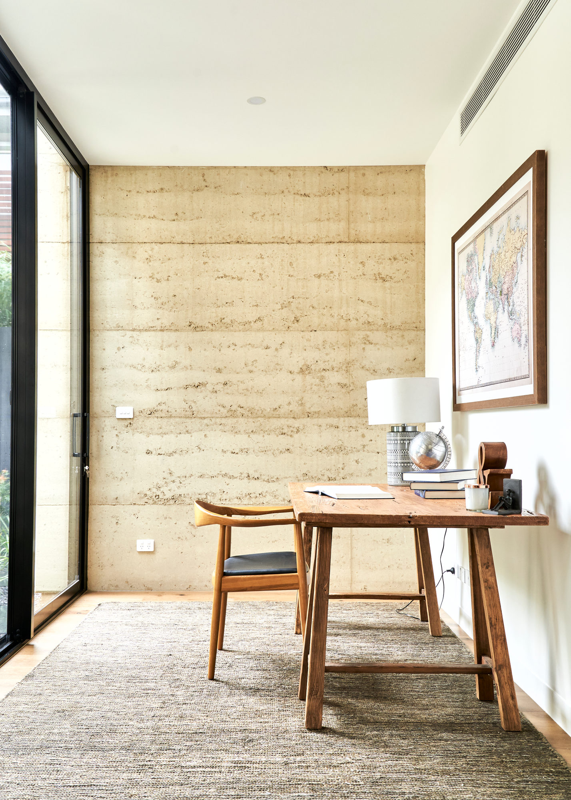

Arquitetura feita de terra, do desenho ao canteiro.
Uma década construindo em taipa de pilão na Austrália, agora aplicada ao contexto brasileiro. Projetos detalhados para a materialidade da terra, obras acompanhadas de perto e equipes capacitadas no local.
Projeto
Arquitetura residencial e institucional com projeto executivo pensado para a taipa de pilão: formas, juntas, reforços e conexões com madeira e metal.
Construção
Administração e acompanhamento de obra, execução de paredes em terra e de instalações artísticas, com foco na qualidade do canteiro.
Consultoria
Suporte a escritórios e construtoras: testes de solo e misturas, desenho de formas e capacitação da equipe de obra local.
Projetos
Sobre

Rodrigo Rocha
Arquiteto e urbanista pela Escola da Cidade, Rodrigo passou quase dez anos na Austrália, onde foi construtor de taipa de pilão na Olnee Constructions, arquiteto e administrador de obras na Earth House Australia e integrou o escritório Steffen Welsch Architects, em Melbourne.
De volta ao Brasil, fundou a Goya para levar a taipa de pilão contemporânea ao contexto local, projetando, construindo e formando equipes. É integrante da Associação Casa Floresta, núcleo de pesquisa ligado à floresta e aos povos originários.
Credenciais
Contato
Vamos conversar sobre o seu projeto em terra.
Projetos, obras, consultorias e capacitação de equipes em todo o Brasil.
Chamar no WhatsApp →